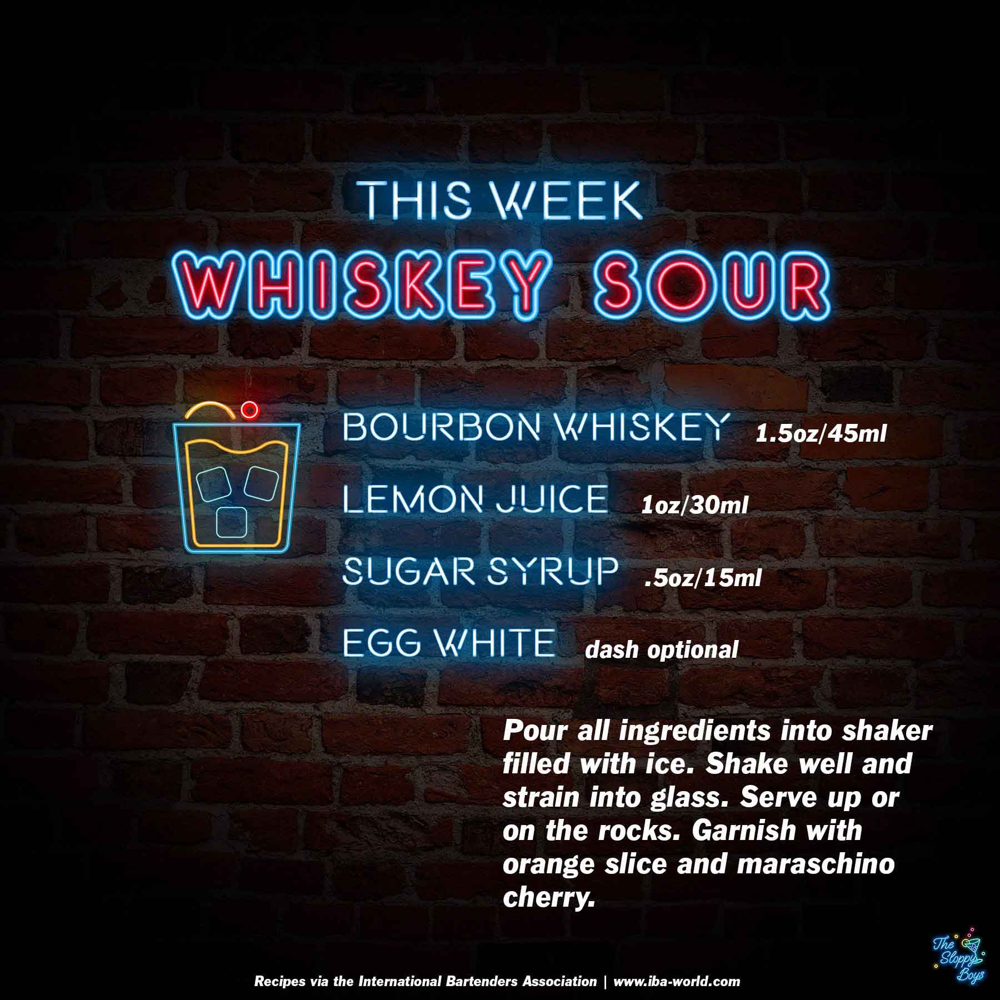

Whiskey Sour
Ingredients
- Bourbon Whiskey (1.5oz/45ml)
- Lemon Juice (1oz/30ml)
- Sugar Syrup (.5oz/15ml)
- Egg White (dash optional)
Steps
- Pour all ingredients into shaker filled with ice.
- Shake well and strain into glass.
- Serve up or on the rocks.
- Garnish with orange slice and maraschino cherry.
Notes